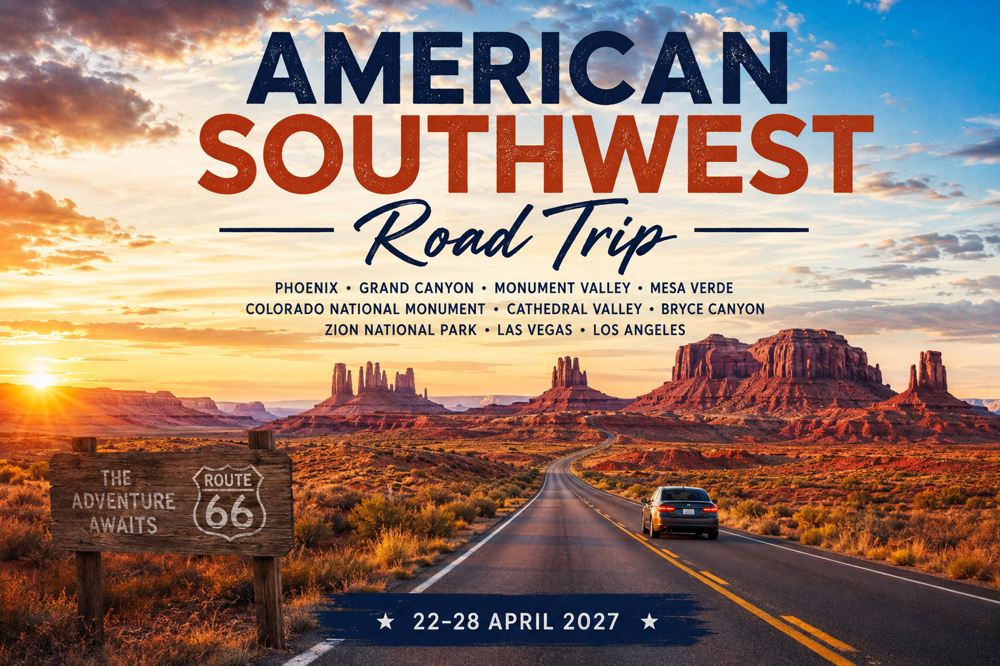
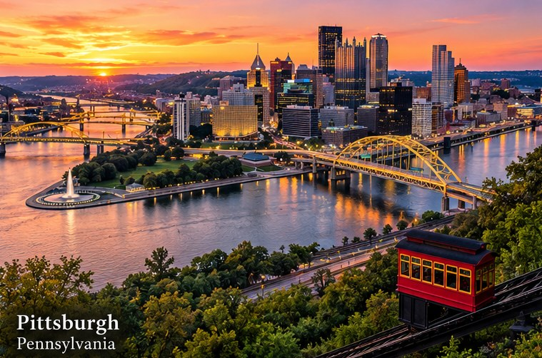
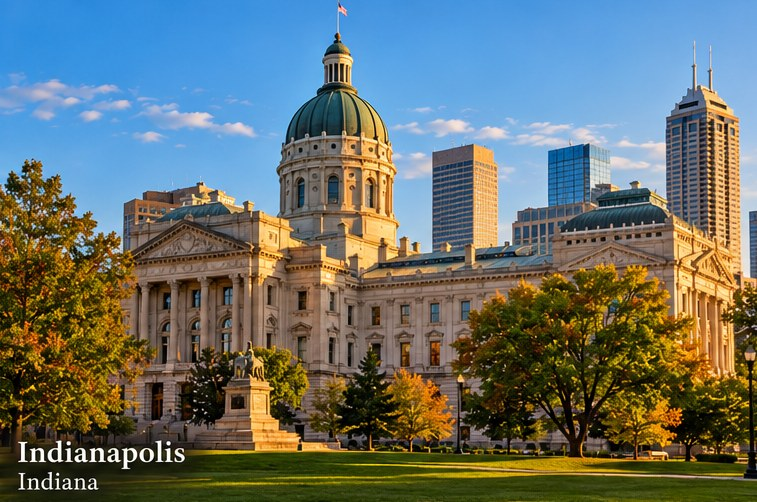
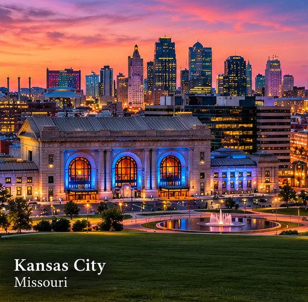
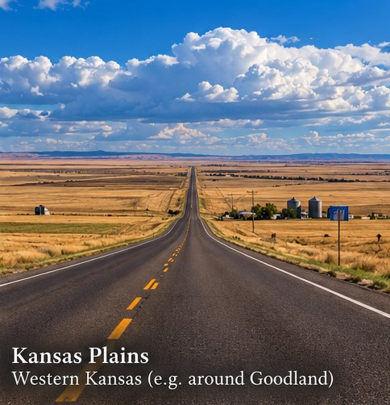
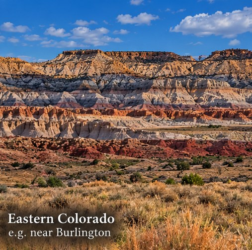
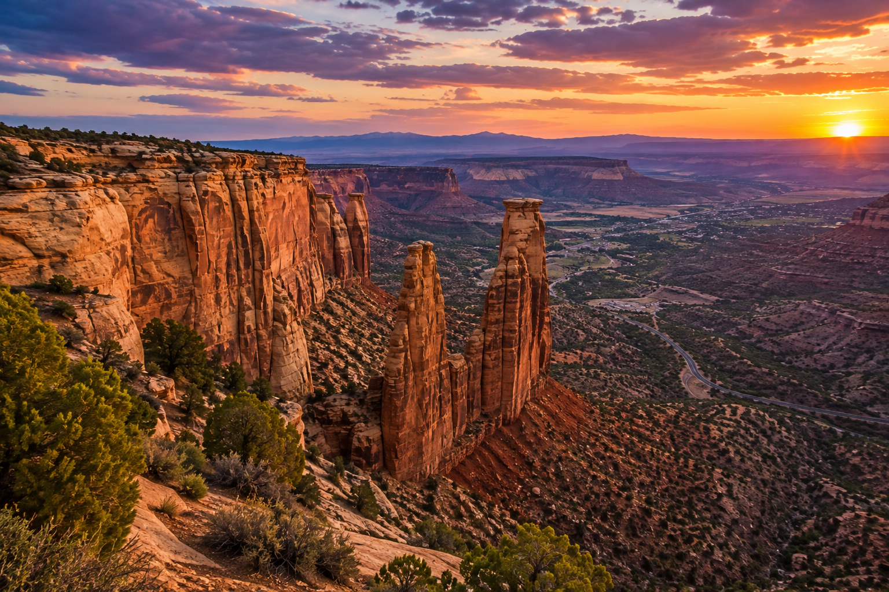
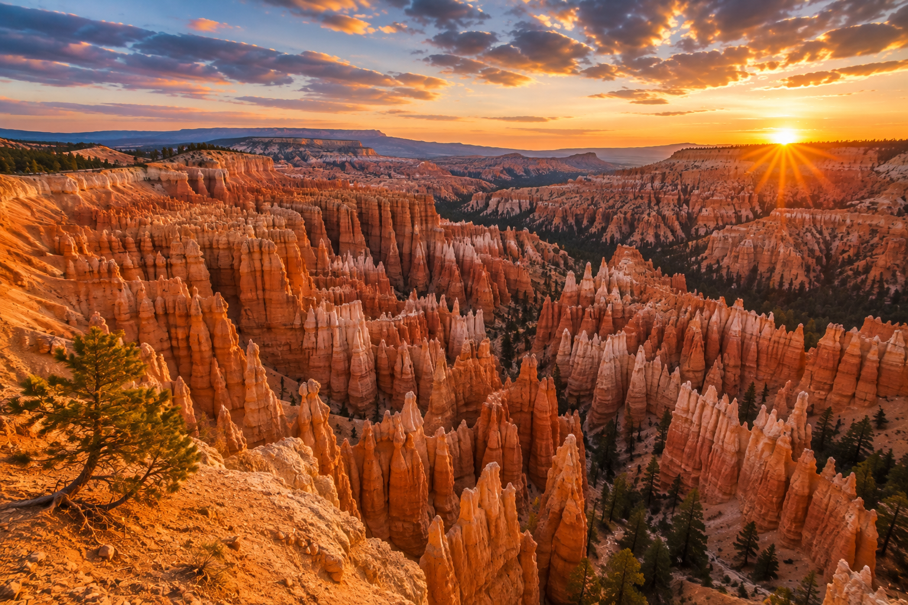
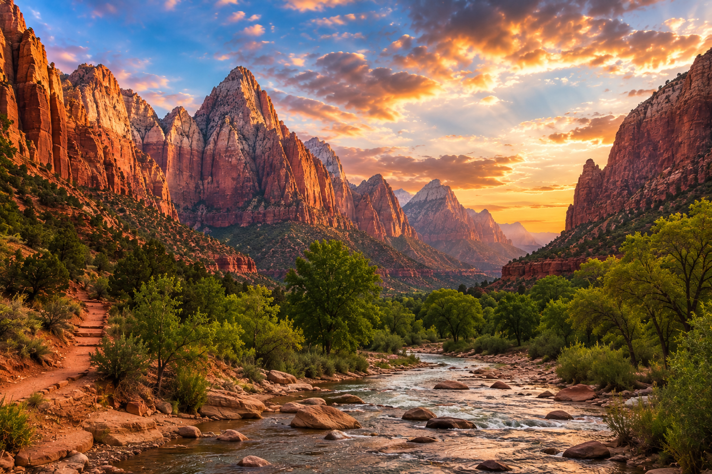
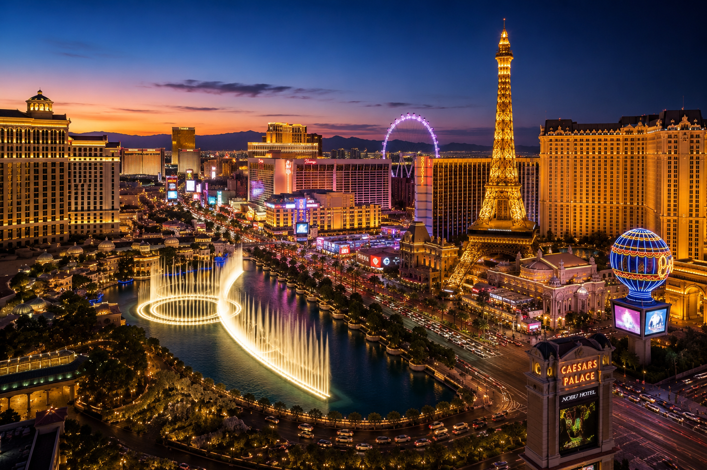

16 – 28 April 2027
New York → Pittsburgh → Indianapolis → St Louis → Kansas City → The High Plains → The Rockies → Colorado National Monument → Moab & Arches → Canyonlands → Capitol Reef & Torrey → Bryce Canyon → Zion → Valley of Fire → Las Vegas → Los Angeles

Contents
Overview
Thirteen days from the Atlantic to the Pacific. Three days on foot in New York, five days crossing the middle of the country to the edge of the Colorado Plateau, then five days through the canyon country of Utah and on to the coast — always heading west, never doubling back.
| The Essentials | |
|---|---|
| Dates | Friday 16 – Wednesday 28 April 2027 (13 days, 12 nights) |
| Starting point | New York City Arrival flight and time to be confirmed |
| Car collected | Monday 19 April, morning — ideally at Newark Liberty Airport (EWR), not Manhattan |
| Departure airport | Los Angeles International (LAX) Wednesday 28 April — at the airport by 6:30 PM |
| Return flight | LAX → London Heathrow, 9:30 PM Virgin Atlantic, Upper Class |
| Vehicle | Sedan (two-wheel drive, standard clearance) — one-way hire, New York to Los Angeles |
| Total distance | ≈ 3,150 miles / ≈ 5,070 km |
| Driving time | ≈ 51 hours over ten driving days Plus scenic drives inside the parks |
| Park pass | America the Beautiful Non-Resident Annual Pass — $250 per vehicle See Entry Passes & Fees. |
| 16–18 Apr | New York City (3 nights) |
| 19 Apr | Pittsburgh, PA |
| 20 Apr | Indianapolis, IN |
| 21 Apr | Kansas City, MO |
| 22 Apr | Goodland, KS |
| 23 Apr | Fruita / Grand Junction, CO |
| 24 Apr | Moab, UT |
| 25 Apr | Torrey, UT |
| 26 Apr | Springdale (Zion), UT |
| 27 Apr | Planet Hollywood Resort & Casino, Las Vegas |
Fourteen states, always westbound:
West Virginia is just fourteen miles of I-70 through the Wheeling panhandle, and Arizona is the 29-mile Virgin River Gorge on I-15 — both easy to miss.
1. The one-way car hire. New York to Los Angeles carries a one-way drop-off fee that can run to several hundred dollars and varies hugely between companies. Compare several, collect at Newark Airport, and make sure unlimited mileage is included — this is a 3,000-mile hire.
2. The park pass. The Non-Resident Annual Pass ($250) covers entry for the car and waives the $100-per-person non-resident surcharge at Bryce Canyon and Zion.
3. New York tickets. Statue of Liberty pedestal or crown tickets, any Broadway show and observation decks sell out for weekend dates in April.
4. Springdale and Moab hotels. Both are small towns with heavy spring demand; book as early as the New York hotel.
The Shape of the Fortnight
The route joins the original itinerary at Colorado National Monument — of all the stops on version 1, the one closest to New York by road. From there it carries on west through the stops that were already planned, with Arches and Canyonlands added and the order arranged so that nothing is driven twice.
Days 1 – 3
No car at all. Three days in Manhattan and Brooklyn on foot, by subway and by ferry. The car is collected on the morning you leave — parking in Manhattan costs more per night than many of the motels further west.
0 miles driving.
Days 4 – 8
Five long days on the interstate: the Appalachians, the Ohio valley, the Mississippi, the Great Plains and finally the Rockies. One headline stop a day keeps it from becoming a blur.
Roughly 2,075 miles · 32 hours driving over five days.
Days 9 – 13
Shorter driving days and long stops: Colorado National Monument, Arches, Canyonlands, Capitol Reef, Bryce and Zion, with a night at Zion rather than a rushed afternoon, then Valley of Fire, Las Vegas and the coast.
Roughly 1,075 miles · 19 hours driving over five days.
Why the Grand Canyon is not on this version. Grand Canyon, Monument Valley, Mesa Verde and Aztec Ruins all lie south of Colorado National Monument. Visiting them after arriving from the east would mean driving south and then back north again — exactly the reversing this version is meant to avoid. See Planner’s Notes for how one of them could be put back.
Figures are approximate, rounded, and are driving time only — no stops, meals, fuel or viewpoints. Each leg has a link to open the route in Google Maps, which will give live figures.
| Day | Leg | Distance | Driving | Character |
|---|---|---|---|---|
| 1–3 | New York City — no driving | — | — | On foot, subway, ferry |
| 4 | Newark → Pittsburgh | 370 mi | 6 h | Pennsylvania Turnpike, Appalachians |
| 5 | Pittsburgh → Indianapolis | 365 mi | 5½ h | I-70 across Ohio |
| 6 | Indianapolis → St Louis → Kansas City | 495 mi | 7½ h | The Mississippi; clocks back 1 h |
| 7 | Kansas City → Goodland | 410 mi | 6 h | Flint Hills, High Plains; clocks back 1 h |
| 8 | Goodland → Denver → Grand Junction | 435 mi | 6¾ h | Over the Continental Divide |
| 9 | Colorado NM → Moab | 140 mi | 3 h | Rim Rock Drive, Colorado River road |
| 10 | Moab → Canyonlands → Torrey | 230 mi | 4¼ h | San Rafael Swell, Capitol Reef |
| 11 | Torrey → Bryce → Zion | 225 mi | 4½ h | Scenic Byway 12, Mount Carmel tunnel |
| 12 | Zion → Valley of Fire → Las Vegas | 200 mi | 3½ h | Virgin River Gorge; clocks back 1 h |
| 13 | Las Vegas → LAX | 285–330 mi | 4¾–5 h | Mojave crossing |
Friday 16 – Sunday 18 April 2027 · No driving
Three days on foot · Manhattan, Brooklyn and the harbour · no car needed
The suggestion below divides the city geographically so that no day is spent crossing and recrossing Manhattan. Day 1 is shaped around whatever time you land — treat it as an evening, not a full day.
| Day | Theme | Suggestions |
|---|---|---|
| Fri 16 Arrival | Midtown at night | Check in, then walk: Times Square, Bryant Park, the New York Public Library from outside, Grand Central’s main concourse. If you land early enough, an observation deck at sunset (7:35 PM) — Top of the Rock gives the classic view of the Empire State Building. |
| Sat 17 Downtown | The harbour, the Financial District and Brooklyn | Early ferry from Battery Park to the Statue of Liberty and Ellis Island (allow 4–5 hours). Then the 9/11 Memorial pools and the Oculus, Wall Street and Trinity Church. Late afternoon, walk across the Brooklyn Bridge towards Brooklyn — the Manhattan skyline is behind you, so turn round often — and finish at DUMBO and Brooklyn Bridge Park for the evening. |
| Sun 18 Uptown & West Side | Central Park, a museum and the High Line | Morning in Central Park (Bethesda Terrace, the Mall, Bow Bridge) and the Metropolitan Museum of Art on its eastern edge. Afternoon on the High Line from Hudson Yards south to Chelsea Market and Little Island. An early night — the drive begins tomorrow. |
Getting around: the subway accepts contactless bank cards and phones at the turnstile (OMNY), with a weekly fare cap, so there is no need to buy a MetroCard. The Staten Island Ferry is free and passes close to the Statue of Liberty — a good fallback if Liberty Island tickets are sold out.
Hotel: Midtown (around Grand Central or Bryant Park) is the most practical base — every subway line is within a short walk, and Penn Station for the Newark train is close.
Statue of Liberty: only Statue City Cruises tickets give access. Pedestal and crown tickets are limited and sell out weeks ahead.
Do not collect the car in Manhattan. A congestion charge applies to vehicles entering Manhattan below 60th Street, hotel parking is expensive, and the first hour of the drive would be the worst hour of the trip.
Monday 19 April 2027
Collect the car at Newark · Pennsylvania Dutch country · the Turnpike over the Alleghenies

Take NJ Transit from Penn Station to Newark Airport (about thirty minutes; change to the AirTrain) and collect the car there. You are on the interstate within minutes and never touch Manhattan traffic.
I-78 runs west through the New Jersey hills into Pennsylvania, past Allentown, to Harrisburg on the Susquehanna. From there the Pennsylvania Turnpike — America’s first long-distance motorway, opened in 1940 — climbs into the Appalachians and threads through ridge after ridge, including through several of the original tunnels bored under the mountains. Pittsburgh arrives suddenly: you come out of the Fort Pitt Tunnel straight onto a bridge with the whole downtown and its three rivers in front of you. It is one of the great arrivals in any American city.
Today is the gentlest of the five crossing days. Use it to get used to the car, the roads and the rhythm.
Tolls: the Pennsylvania Turnpike is entirely cashless. Tolls are billed through the hire company, usually with a daily admin fee — check what its toll package costs before you leave the desk.
At the desk: confirm unlimited mileage, the one-way fee, the toll package and that the car may be taken through every state on the route.
Fuel: Turnpike service plazas are frequent and open 24 hours.
Tuesday 20 April 2027
The National Road · a corner of West Virginia · the Wright brothers’ home town

South from Pittsburgh to pick up I-70, the road you will follow, on and off, for the next four days and well into Utah. It crosses the narrow panhandle of West Virginia at Wheeling, then the Ohio River, and settles into the long, flat, farmed country of Ohio and Indiana.
I-70 here shadows the National Road, the first federally funded highway in the United States, built westward from 1811. Old stone bridges, mileposts and inns survive alongside it, and US-40 — its modern number — is never more than a few minutes from the interstate.
The day’s set piece is Dayton, home of the Wright brothers, and the vast air museum on its edge. Plan around it.
Wednesday 21 April 2027
The Mississippi · the Gateway Arch · barbecue country

The longest day of the crossing, and the one that the clock helps most. You gain an hour at the Illinois line, so leaving Indianapolis at 8:00 AM puts you at the Mississippi at around 11:00 AM local time.
The Gateway Arch is 630 feet of stainless steel on the west bank of the river — the symbolic door to the West, and the right place to mark the halfway point of the crossing. The tram to the top runs inside the legs in small pods; the windows at the top look east over the river and west over the plains you are about to drive into.
From St Louis, I-70 runs across Missouri through rolling farmland to Kansas City, which arrives at around 5:00 PM. Kansas City is the barbecue capital of the country: dinner is the evening’s entertainment.
Put your watch back one hour at the Indiana–Illinois line. You are on Central Daylight Time from here until western Kansas.
Thursday 22 April 2027
The Flint Hills · chalk monuments on the prairie · the High Plains

The day people warn you about — and usually the one they end up remembering. West of Topeka, I-70 crosses the Flint Hills, the last large stretch of unploughed tallgrass prairie in North America. In late April the ranchers burn the old grass, and the hills go from black to an almost luminous green within weeks.
Beyond Salina the land flattens, the trees disappear and the sky takes over. Grain elevators mark each town from fifteen miles away. The trick on the High Plains is to stop deliberately every ninety minutes; each of the places below is close to the interstate.
Goodland, the last town of any size before Colorado, is the overnight. It already runs on Mountain Time, which means an extra hour of evening.
Clocks back again. The Mountain Time line runs through western Kansas; Goodland is on Mountain Daylight Time, the same as Colorado and Utah. Tolls: the stretch of I-70 from Kansas City to Topeka is the Kansas Turnpike, which is cashless — billed through the hire company like Pennsylvania.
Friday 23 April 2027
Denver · the Continental Divide at 11,000 feet · Glenwood Canyon · joining the original route


The last crossing day, and by far the most spectacular. The plains rise so gradually that you will not notice you are climbing until, somewhere past Limon, the Front Range appears on the horizon as a white line.
Skirt Denver and climb straight into the mountains on I-70: through Idaho Springs and Georgetown, up to the Eisenhower Tunnel under the Continental Divide — the highest point on the US interstate system — and down past Vail and over Vail Pass. Then Glenwood Canyon: twelve miles where the interstate is cantilevered and stacked on two levels along the Colorado River between thousand-foot walls. It is one of the most remarkable pieces of road engineering in the world.
West of Glenwood Springs the mountains open out into desert mesas, and by Grand Junction you are on the edge of the canyon country. Colorado National Monument rises directly above the town.
If you are at Grand Junction by 5:30 PM, drive Rim Rock Drive this evening (see Day 9) — the canyon walls catch the last light and sunset is at 7:58 PM. Otherwise, it is the first thing tomorrow.
Late-April snow on the Eisenhower Tunnel approach and Vail Pass is normal, and chain or traction laws can be activated for passenger cars. Glenwood Canyon also closes from time to time for rockfall. Check cotrip.org before leaving Goodland, and again at Denver.
If I-70 is closed through Glenwood Canyon, the signed detour is long; ask locally before committing.
Altitude: you go from 3,700 feet at Goodland to over 11,000 feet in about four hours. Drink more water than feels necessary.
Brakes: use a lower gear on the long descents west of the tunnel and Vail Pass.
Fuel: fill in Denver; prices rise in the mountain towns.
Saturday 24 April 2027
Rim Rock Drive · the Colorado River road · two thousand stone arches
The one stop shared with the original itinerary’s crossing day. Rim Rock Drive runs 23 miles along the canyon rim between the Grand Junction and Fruita entrances, with more than a dozen overlooks: Cold Shivers Point, Ute Canyon, the Coke Ovens and Independence Monument. Staying in Fruita, the easy way is to drive in from the Grand Junction end and come out at Fruita, back onto I-70 westbound. Allow an hour and a half to two hours.
Rather than the usual route down US-191, leave I-70 at Cisco (exit 204) and take Utah State Route 128, the River Road. It is fully paved and follows the Colorado River for 45 miles through a red-walled canyon, past the Fisher Towers and Castle Valley, into Moab from the north. It is one of the best drives in Utah and almost nobody arriving from the east uses it.
The park entrance is five minutes north of Moab. Over 2,000 natural stone arches in a compact area, with one paved scenic road of about 18 miles and most of the famous sights a short walk from it.
| Where | What | Time |
|---|---|---|
| Park Avenue | A one-mile walk between sandstone fins like city skyscrapers. | 20 min (view) – 1 h (walk) |
| Balanced Rock | A 3,600-ton boulder on a narrow pedestal; short loop path. | 20 min |
| The Windows section | North and South Windows and Turret Arch, then Double Arch nearby — four arches for very little walking. | 1–1½ h |
| Delicate Arch | Utah’s emblem. A 3-mile return hike over slickrock with about 480 feet of climbing; best at sunset. Or see it from the Lower and Upper Viewpoints with almost no walking. | 2½–3 h (hike) |
| Devils Garden | Landscape Arch, one of the longest natural spans in the world, 1.6 miles return on a good trail. | 1 h |
Timed-entry reservations. Arches required booked entry slots in recent springs, but the system was dropped for 2026. Check nps.gov/arch a month or two before travelling in case it returns for 2027. Either way, the car parks at Delicate Arch and Devils Garden fill by mid-morning; afternoon and evening are easier.
Fees: Colorado National Monument and Arches are both covered by the pass.
Water: carry at least a litre each on any walk in Arches; there is very little shade.
Weather: Moab is lower and warmer than Grand Junction — around 72°F / 22°C by day.
Sunday 25 April 2027
Sunrise at Mesa Arch · the San Rafael Swell · the Fremont River at golden hour
Canyonlands is the largest park in Utah, and its most accessible district, Island in the Sky, is a mesa a thousand feet above the White Rim and two thousand above the rivers — reached on a fully paved road 40 minutes from Moab.
If you can face a 5:45 AM start, Mesa Arch at sunrise is one of the great sights of the American West: the low sun lights the underside of the arch orange, framing the canyons beyond. It is a half-mile walk from the road. Then Grand View Point at the end of the road, the Green River Overlook, and, on the way back out, Dead Horse Point, the state park overlooking a gooseneck of the Colorado.
North on US-191 to I-70, then west across the San Rafael Swell — a hundred miles of startling emptiness. Leave at exit 149 for UT-24 south, through Hanksville, and west along the Fremont River into Capitol Reef National Park in the late afternoon, which is the best possible time. UT-24 is paved, passes directly through the park, and has no fee.
The stops along UT-24 described in the original itinerary all still apply: Factory Butte, the Bentonite Hills, the Fremont petroglyphs, Panorama Point and the Goosenecks for sunset. The suggestions alongside are additions.
The Cathedral Valley Loop, the Behind the Reef Road and the Shafer Trail (the switchbacks below Island in the Sky) are all unpaved, rough and unsuitable for a two-wheel-drive hire car. Look at them from above; do not drive them.
Breakfast: buy it the night before for a sunrise start; nothing in Moab is open at 5:45 AM.
Fuel: Moab, then Green River or Hanksville. Nothing in Canyonlands or on the San Rafael Swell.
Dinner: book in Torrey — kitchens close early this early in the season.
Monday 26 April 2027
Scenic Byway 12 · the Bryce amphitheatre · a night at the foot of Zion Canyon

The original plan did Bryce, Zion and the drive to Las Vegas all in one day. Here the day stops at Zion, and Las Vegas moves to tomorrow. That buys a relaxed morning at Bryce, an evening at Zion and the chance of the canyon floor at its quietest first thing tomorrow.
Scenic Byway 12 over Boulder Mountain, along the Hogback ridge and through Escalante, then the Bryce amphitheatre — Sunrise, Sunset, Inspiration and Bryce Points, and the paved Rim Trail between the first two. The original itinerary’s notes on Byway 12 and Bryce apply in full.
From Bryce, through the arches of Red Canyon, south on US-89 and west on UT-9 into Zion through the East Entrance: Checkerboard Mesa, the Canyon Overlook Trail just before the tunnel, the Mount Carmel Tunnel and the switchbacks down to the canyon floor. Arrive in Springdale for the evening with the canyon walls glowing above the town.
Fees: Bryce and Zion both carry the $100-per-person non-resident surcharge, waived by the pass.
Fuel: Torrey, then Escalante or Bryce Canyon City.
Tuesday 27 April 2027
The canyon floor at first light · the Virgin River Gorge · red rock in the Mojave

Sleeping in Springdale means you can be on one of the first shuttles up the canyon, before the crowds. The Scenic Drive is shuttle-only all spring. Ride to the end, the Temple of Sinawava, and walk the paved Riverside Walk (2.2 miles return) to where the canyon narrows; then come back down, getting off at The Grotto or Zion Lodge for the Emerald Pools. Back at the car by about 11:30 AM.
I-15 through St George and the Virgin River Gorge into Nevada, then leave at exit 93 for Overton and enter Valley of Fire State Park from the east. In the original plan it was a maybe; here it fits comfortably. Nevada’s oldest state park is a valley of flaming red Aztec sandstone, ancient petroglyphs and a paved road through the middle. Drive through it east to west and rejoin I-15 at exit 75, 45 minutes from the Strip.
With the hour gained at the Nevada line, you reach Las Vegas around 5:00 PM local time with the whole evening ahead.
Heat: Valley of Fire can reach the high 80s°F / 30°C by late April. Carry water and avoid long walks in mid-afternoon.
Fees: Valley of Fire is a Nevada state park — a separate fee per vehicle, not covered by the pass.
Tonight: fill the tank and repack for the flight, as in the original plan.
Wednesday 28 April 2027
The Mojave crossing · LAX by 6:30 PM · unchanged from version 1, with new stops

Identical in shape to the last day of the original itinerary, and the same rule applies: build the day backwards from 6:30 PM at LAX, and treat Los Angeles traffic, not the desert, as the risk. Return the car at the LAX Consolidated Rental Car Center, take the SkyLink people mover to the terminals, and check in at Terminal 2.
| Time | Milestone |
|---|---|
| 10:00 AM | Depart Las Vegas |
| 11:30 AM | Baker — coffee and fuel |
| 1:00 PM | Barstow — lunch and the decision point |
| 3:00 PM | Last safe moment to leave Barstow |
| 5:45 PM | Return the car at the LAX Rental Car Center |
| 6:30 PM | At Terminal 2 for check-in |
The one-way hire matters today: make sure the drop-off location on the contract is the LAX Rental Car Center, and photograph the car, mileage and fuel gauge when you hand it back.
Money
The same pass as version 1: the America the Beautiful Non-Resident Annual Pass, $250 per vehicle, bought digitally on Recreation.gov. Of the eleven parks carrying the $100-per-person non-resident surcharge, two are on this route — Bryce Canyon and Zion — and the pass waives it.
| Site | Standard fee | Pass? |
|---|---|---|
| Gateway Arch NP (tram ticket extra) | Small entry fee in tram price | Partly |
| Colorado National Monument | $25 / vehicle | Yes |
| Arches NP | $30 / vehicle | Yes |
| Canyonlands NP | $30 / vehicle | Yes |
| Capitol Reef NP (Scenic Drive only) | $20 / vehicle | Yes |
| Bryce Canyon NP | $35 / vehicle | Yes + waives $100 pp |
| Zion NP | $35 / vehicle | Yes + waives $100 pp |
| Dead Horse Point State Park | ≈ $20 / vehicle | No |
| Kodachrome Basin State Park | ≈ $10 / vehicle | No |
| Valley of Fire State Park | ≈ $15 / vehicle (non-Nevada) | No |
| Statue of Liberty ferry | Per person | No |
| Flight 93 Memorial, Air Force Museum | Free | N/A |
Yes. Without it, two people would pay $400 in surcharges at Bryce and Zion alone, before any entrance fees. With Arches, Canyonlands, Colorado National Monument and Capitol Reef added, the pass pays for itself several times over.
The note in version 1 about validity still applies: twelve months from the month of purchase.
Verification note. State park and ferry prices are approximate. 2027 federal prices have not been published; re-check nps.gov and each state park roughly one month before departure.
Before and During
The biggest new cost in version 2. Points to settle when booking:
| Check | Why |
|---|---|
| Drop-off fee | New York to Los Angeles can add several hundred dollars; it differs widely between companies and between pick-up locations. |
| Unlimited mileage | Essential: over 3,000 miles. Some one-way rates cap mileage. |
| Pick-up location | Newark Airport is usually cheaper than Manhattan and avoids the congestion charge and city traffic. |
| Tolls | Pennsylvania and Kansas turnpikes are cashless; ask what the toll package or per-toll admin fee costs. |
| Unpaved roads | Most contracts exclude them. Monument Rocks, Capitol Gorge and Rainbow Basin are graded gravel — only if dry, and at your own risk. |
| Where | Zone |
|---|---|
| New York → Indiana | Eastern Daylight Time |
| Illinois → central Kansas (Day 6) | Central Daylight Time — back 1 h |
| Western Kansas → Utah (Day 7) | Mountain Daylight Time — back 1 h |
| Nevada & California (Day 12) | Pacific Daylight Time — back 1 h |
Three hours gained over the fortnight, all of them on driving days — which is part of why the long days are manageable.
The trip runs from a cool New York spring through possible snow in the Rockies to desert heat in Nevada. Pack for 30°F / −1°C at dawn in Torrey and 85°F / 29°C in the Valley of Fire, sometimes within two days.
Version 2
Of the stops on the original route, Colorado National Monument is the closest to New York by road — roughly 2,100 miles, against about 2,200 for Mesa Verde or Aztec and well over 2,300 for the Grand Canyon or Phoenix. The five crossing days therefore end there.
Grand Canyon, Marble Canyon, Monument Valley, Mesa Verde and Aztec Ruins are all south of the joining point. Including them would mean driving south and then back north, the reversing this version avoids.
The cleanest swap is Monument Valley: from Moab, south on US-191 and US-163 through Bluff and the Valley of the Gods to Monument Valley, then west via Page to Kanab and Zion. That replaces Canyonlands, Capitol Reef, Torrey and Bryce, and keeps the route moving west. The Grand Canyon South Rim cannot be fitted in without either a day more or a long backtrack.
New York (three nights), the full cross-country drive, Arches, Canyonlands’ Island in the Sky, the River Road (UT-128) into Moab, an overnight at Zion and a proper afternoon at Valley of Fire. Every “Places to Consider” entry is new, apart from a few deliberately repeated where they are the obvious thing to do.
Five consecutive days averaging over six hours of driving is a lot, especially straight after a transatlantic flight and three busy days in New York. If that sounds too much, the honest alternative is to fly New York to Denver and start the drive there, gaining three days for the canyon country.
Distances and drive times in this version are estimates, not taken from mapped routes as in version 1. Use the Google Maps link on each day for live figures. Sunrise and sunset times are calculated for the dates and are accurate to within a few minutes.